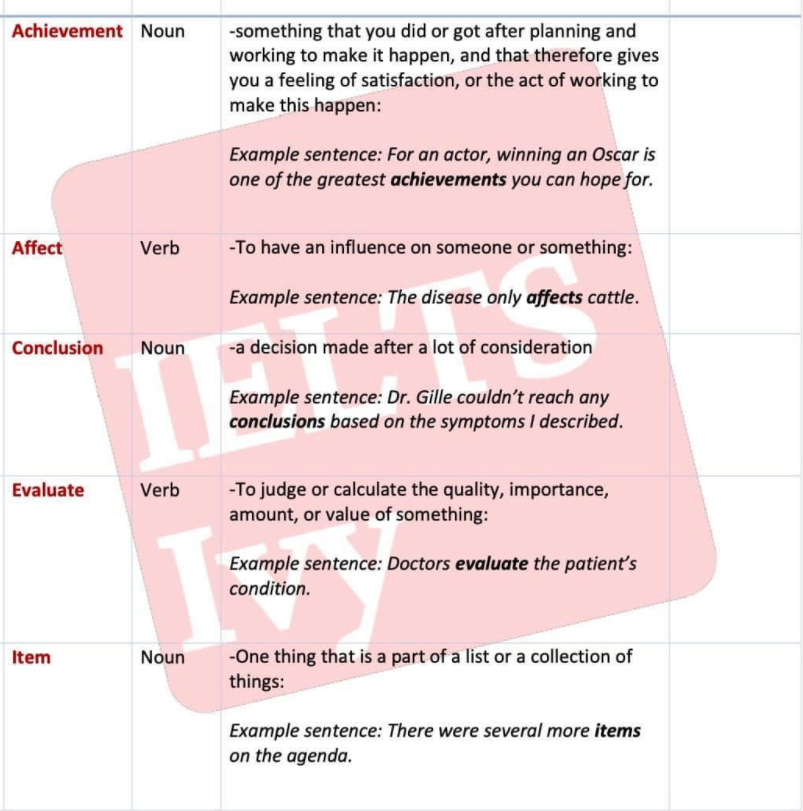

- Achievement(Noun)
- (adj) great,lower,grand considerable,extraordinary,notable,outstanding,remarkable,
tremendous
(phrases)quite an achievement,a lack of achievement,a level/standard of achievement,a record of achievement
- Example sentence
- Government is a great achievement of civilization.
- Being in poverty as a child is associated with lower achievement later in school,
- Affect(Verb)
- (adv)greatly,materially,radically,significantly,very much|barely,hardly,not unduly,deeply,profoundly
- Example sentence
- Conclusion(Noun)
- (adj) great,lower,grand considerable,extraordinary,notable,outstanding,remarkable,
tremendous
(phrases)quite an achievement,a lack of achievement,a level/standard of achievement,a record of achievement
- Example sentence
- Government is a great achievement of civilization.
- Being in poverty as a child is associated with lower achievement later in school,
- Evaluate(Verb)
- (adv)systematically
- Example sentence
- Item(Noun)
- (adj)luxury,household
- Example sentence